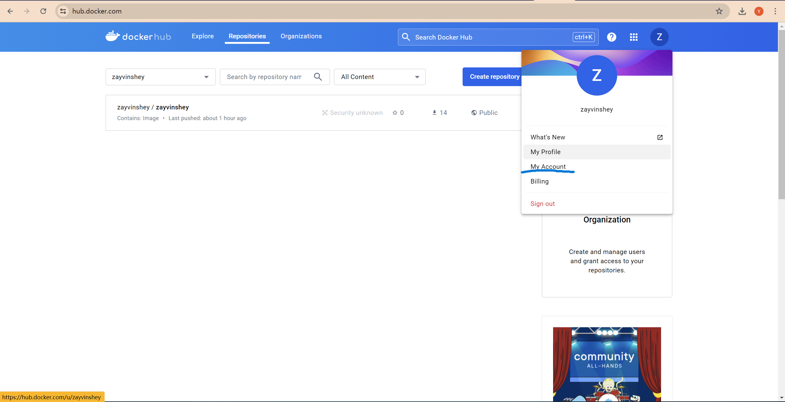
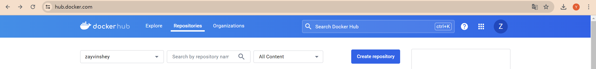

Docker Registry
在接触了docker之后，发现docker有存储库这个东西，一开始以为只能用公共的储存库，感觉公共的储存库有些许弊端，加上之前再 Arch Linux 上使用了 Podman 发现有一些镜像是无论如何都PULL不下来的，即使我挂了代理还是一样（ps:不知道是不是我的原因），在使用Podman的时候发现Podman还是从docker的储存库里拉取镜像，所以突发奇想我能不能也创一个储存库来存放我的一些常用的镜像呢？
这里顺带讲一下 Docker 和 Podman
在 Docker 中，启动容器意味着通过 Docker 客户端向 Docker 守护进程发送请求，随后启动容器，这意味着容器进程是 Docker 守护进程的子进程，而不是用户会话,所以我们需要在命令前加上sudo获得权限否则将会报错提示没有权限。
1 | sudo docker search IMAGE |

因此，Linux 审核系统 ( auditd) 拾取的来自容器进程的任何重要事件都会指定其审核用户 ID，而unset 不是首先启动相应容器的用户的实际 ID。这使得将恶意活动与特定用户联系起来变得极其困难，并损害了系统的安全性。
使用Podman，由于每个容器都是通过用户登录会话直接实例化的，因此容器进程数据保留了这些信息，并且auditd可以准确地检测和列出启动特定容器进程的每个用户的ID，从而保持清晰的审计跟踪。
只不过Podman需要拉镜像只能通过docker的存储库拉取（也可以修改配置文件不需要在前面加上docker的存储库’docker.io’方法到时候补）
1 | podman pull docker.io/XXX/IMAGE |
其他命令Podman和Docker是一样的。
创建私有容器注册表（Docker Registry）
必要条件是你需要一个Docker Hub 的账号，如果没有的话也可以注册一个免费的Docker Hub账号 (国内的糟糕网络环境可能需要使用到魔法) 每一个免费的账号允许免费创建和维护一个私有存储库。
注册完成点击My Account

再点击 Security 再次点击 New Access Token
点击 Generate
现在就能看到你的访问令牌了 我这里对token进行了处理 一般来说是会有一段token的
现在让我们回到导航页创建属于你的私有仓库吧！
点击导航页的 Create repository

自己填写一下信息就大功告成了
然后使用Docker或者Podman登录你的私有仓库
1 | #Docker |
提示 Login Succeeded! 就是登录私有仓库成功！注意这里的访问令牌是可以创建多个的 也可以把不需要的删除。
最后再奉上我的私有储存库和一份Docker的命令图解，包含了大部分的Docker命令可供大家学习